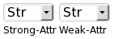

FAQ
What does strong-attr/weak-attr mean? 
Certain Species/Talents let you pick "+2 to any" or "+2 to strength or dex" &ct. The "strong-attr" selects the attribute with a bonus (if-any) and the "weak-attr selects the attribute with a penalty (if-any)
Examples:
-
If you are a Drake, "strong-attr" selects which attribute gets the "+2 to Str or Int" (No, it does not force you to pick one of those, you can select +2 Cha and hope your GM doesn't notice) and "weak-attr is ignored
-
If you are a Saurian "strong-attr" selects which attribute gets the "+2 to any" and "weak-attr" selects which attribute gets the "-2 to any"
Can I add a modifier that replaces one attribute with another (e.g. for Martial Art)?
Unfortunately, no. Right now you have to add the difference between them, and update this when that changes. This is on my todo list, but low priority.